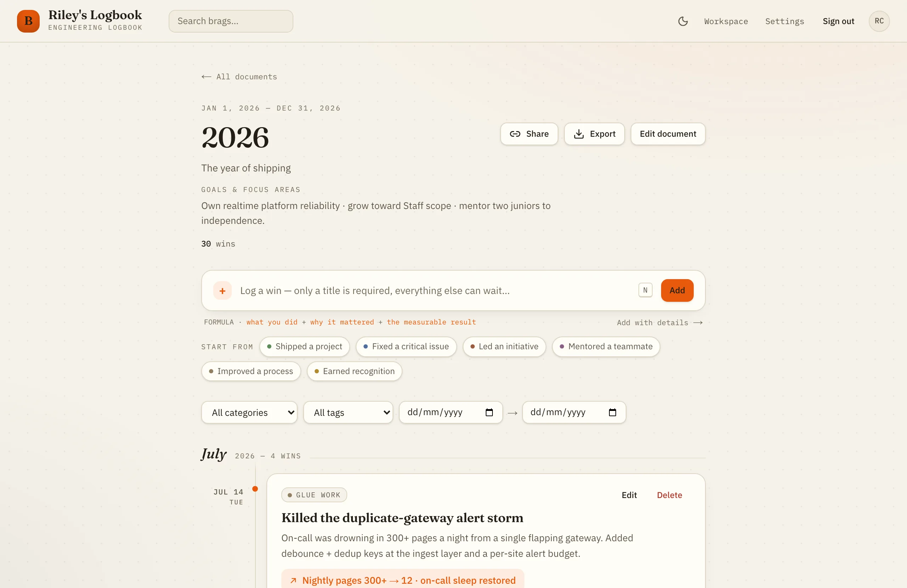
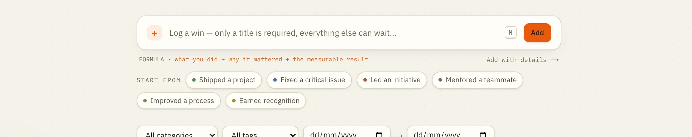
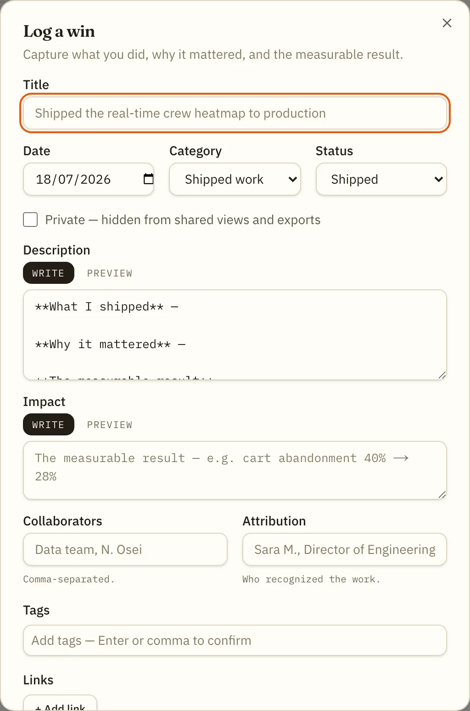
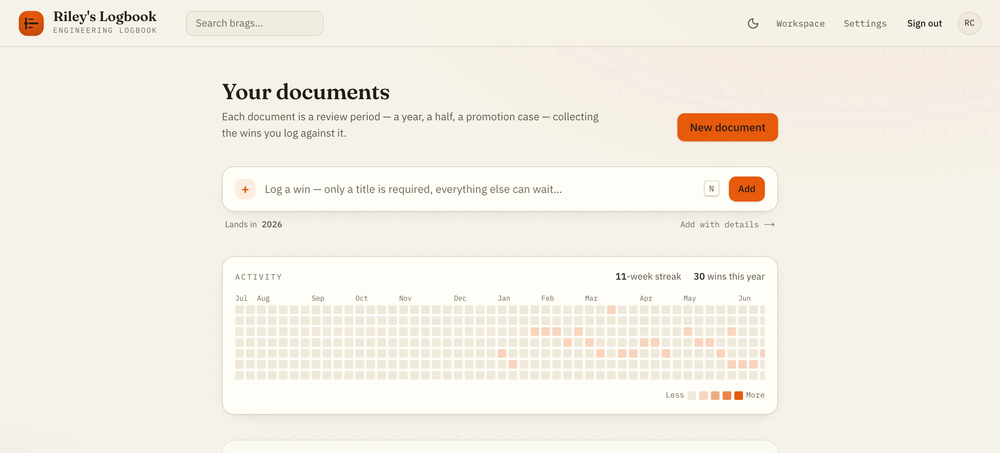
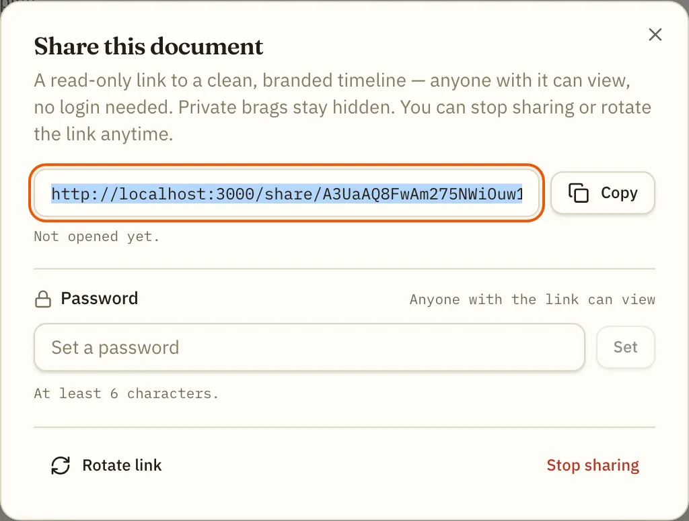
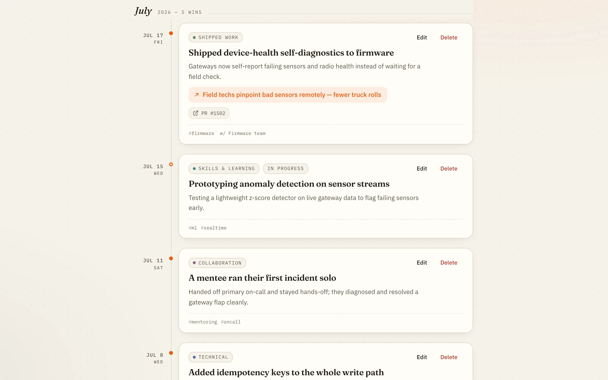

Your database
Postgres you run, on hardware or a host you picked. Career evidence — promotion cases, praise, salary arguments — never sits on someone else's roadmap.
postgres://your-server/bragbit
Open source · Self-hosted · AGPL-3.0
You shipped a hundred things this year. At review time you can name three — and two of them happened last month. BragBit is a brag document that takes under 30 seconds to feed, and runs on infrastructure you control.
docker compose up -d — and it's yours. No entry caps, no vendor to outlive
you.

The real thing — a document, its quick-add box, and the timeline beneath it.
The problem
The work that was hardest is the work that leaves the least evidence. The prevention, the glue, the mentoring — none of it had a ticket, so as far as the record is concerned, it never happened. Your memory is not a system of record. Your achievements are evidence. Evidence gets written down.
Kept in your head
gone by December
Kept in BragBit
still there at review time
“The palest ink is better than the best memory.”
The formula
A win that survives a promotion committee has three parts. BragBit's editor keeps a field for each, and its templates seed all three — so you write the useful version on the first try, not the version you'll reconstruct in March.
What you did
Cut the CI pipeline from 31 min to 9 min
Why it mattered
Every engineer waited on it, every push, all day
The measurable result
3.4× faster CI · ≈40 engineer-hours/week recovered
The tour
Capture
A title is all that's required — everything else can wait. Press N from anywhere, or start from an action-verb template when the page is blank and the words won't come.

Templates
Each template opens the editor pre-filled with the right category, status, and a Markdown scaffold — what you did, why it mattered, the measurable result. Add collaborators, attribution, tags, links, and attachments of any type. Mark it private and it never leaves your account.

Cadence
A GitHub-style activity heatmap and a week streak on the dashboard, so the habit stays honest. Documents are review periods — a year, a half, a promotion case — and you keep as many as you like.

Share
Revocable, optionally password-protected, and branded to your workspace. Entries you marked private are never in it — the share is a view of the record, not a copy of it. Rotate the link or stop sharing at any time.


A designed warm dark mode — not a mechanical invert. Follows your OS by default.
The inventory
No asterisks and no coming-soon column. If it's on this page, it's in the build you can run tonight.
49 capabilities · 8 areas
Get it down before it's gone.
A year of work, navigable.
Claims are cheap. Receipts aren't.
Hand over the case, not the keys.
Leave whenever you like.
Make it look like yours.
Yours, and only yours.
Boring where it counts.
Ownership
Postgres you run, on hardware or a host you picked. Career evidence — promotion cases, praise, salary arguments — never sits on someone else's roadmap.
postgres://your-server/bragbit
Markdown, JSON, and PDF export, in full, on demand. Nothing is trapped in a proprietary shape, so leaving is a decision rather than a migration project.
bragbit-wins.md · data.json
AGPL-3.0. Read the code, change it, run it forever. Network copyleft means a hosted fork has to stay open too — the deal can't quietly change later.
AGPL-3.0 · network copyleft
Self-hosting
A workspace is the tenant boundary — a freelancer is a workspace of one, a company is a workspace with many. Everything beneath it is identical. You pick the shape once, at deploy time.
private-solo — one personal workspace, for a freelancer or an individual. No members, no invites, no roles: a workspace of one. Branding still applies, which is what your client-facing share pages use.
private-org — one organization workspace, for a company self-hosting for its team. Growth is invitation-only: there is no open sign-up, so an account exists only by accepting a tokenized invite.
Clone it
git clone https://github.com/hamedafarag/bragbit.git
cd bragbit
cp .env.example .envSet four things in .env
INSTANCE_MODE=private-soloprivate-org
APP_URL=https://brag.example.com
BETTER_AUTH_SECRET=… # openssl rand -base64 32
SMTP_HOST=smtp.example.com # + PORT / USER / PASSWORD / FROM
That's the whole list. Compose wires DATABASE_URL and
STORAGE_DIR for you. The secret must be at least 32 characters, and
APP_URL is baked into emails and share links — use the real origin,
over https.
Bring it up
docker compose up -d
App and Postgres together. Migrations apply themselves on start, so a fresh
deployment provisions its own schema. It's serving on
http://localhost:3000.
Open it — the wizard does the rest
First run redirects to /setup. Create the owner account and your
workspace, and you're in — the wizard then closes for good. It creates a single
personal workspace and signs you straight in. If the URL is public before you
get there, set SETUP_TOKEN to keep everyone else out of it.
First run redirects to /setup. Create the owner account and your
workspace, and you're in — the wizard then closes for good. It creates a single
organization workspace; from /admin you then invite your team
and set roles. Owners and admins manage branding, members, and invitations — but
never read anyone's brag content. If the URL is public before you get there, set
SETUP_TOKEN to keep everyone else out of it.
Compose injects the database connection and a named volume for uploads. Two knobs
worth setting: POSTGRES_PASSWORD (defaults to bragbit —
change it on anything non-local) and APP_PORT (defaults to 3000).
The app serves plain HTTP — terminate TLS in front with Caddy, nginx, or Traefik
(the Dokploy guide does it for you). /api/health returns 200 when the
app and database are reachable and 503 when they aren't; point your uptime monitor
at it.
Attachments land on local disk by default; switch to any S3-compatible bucket — AWS,
R2, or the bundled MinIO — with STORAGE_DRIVER=s3. Postgres and uploads
live in Docker volumes and survive docker compose down.
Back-fill three wins from last month — it takes ninety seconds, and it's the difference between remembering your year and reconstructing it.
Open source · AGPL-3.0 · Postgres · Docker
Click anywhere or press Esc to close